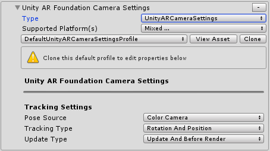

Unity AR camera settings provider (Unity AR相机设置提供者)
Unity AR相机设置提供者是一个实验性MRTK组件，它使混合现实应用程序可以在Android和iOS设备上运行。
Unity AR相机设置提供者选项

如何添加提供者到你的场景的指南: 如何为 iOS 和 Android配置MRTK
跟踪设定
Unity AR相机设置提供者允许使用配置选项来设置跟踪。这些设置特定于Unity AR相机设置提供者实现。
Pose Source (姿势源 )
姿势源定义了增强现实跟踪姿势的可用类型。通常，这些值映射到正在运行应用程序的设备的一个组件。
下表描述了可用的选项。
| 选项 | 描述 |
|---|---|
| Center | 头戴式设备的中心眼。 |
| Color Camera | 移动设备的彩色相机。 |
| Head | 头戴式设备的头眼（head eye），通常略高于中心眼。 |
| Left Eye | 头戴式设备的左眼。 |
| Left Pose | 左手控制器姿势。 |
| Right Eye | 头戴式设备的右眼。 |
| Right Pose | 右手控制器姿势。 |
姿势源的默认值是Color Camera，以在手机或平板电脑等移动设备上启用透明显示。
Tracking Type (跟踪类型 )
跟踪类型定义姿势中将用于跟踪的部分。
下表描述了可用的选项。
| 选项 | 描述 |
|---|---|
| Position | 设备的位置。 |
| Rotation | 设备的旋转。 |
| Rotation And Position | 设备的位置和旋转。 |
跟踪类型的默认值为Rotation And Position，以启用最丰富的跟踪体验。
Update Type (更新类型 )
更新类型定义了在帧处理过程中采样姿态数据的阶段顺序。
下表描述了可用的选项。
| 选项 | 描述 |
|---|---|
| Before Render | 就在渲染之前。 |
| Update | 在框架的更新阶段。 |
| Update And Before Render | 在更新阶段并且在渲染之前。 |
跟踪类型的默认值为Update And Before Render，以启用最低的跟踪延迟。